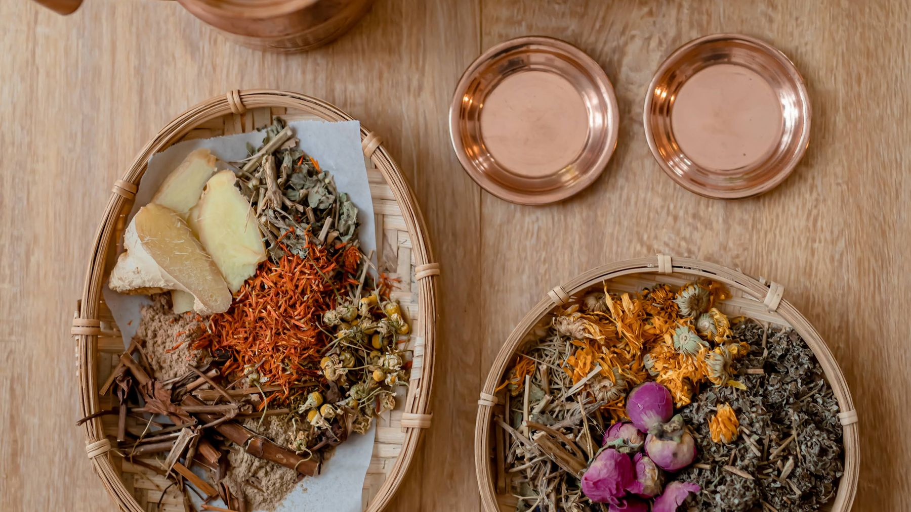
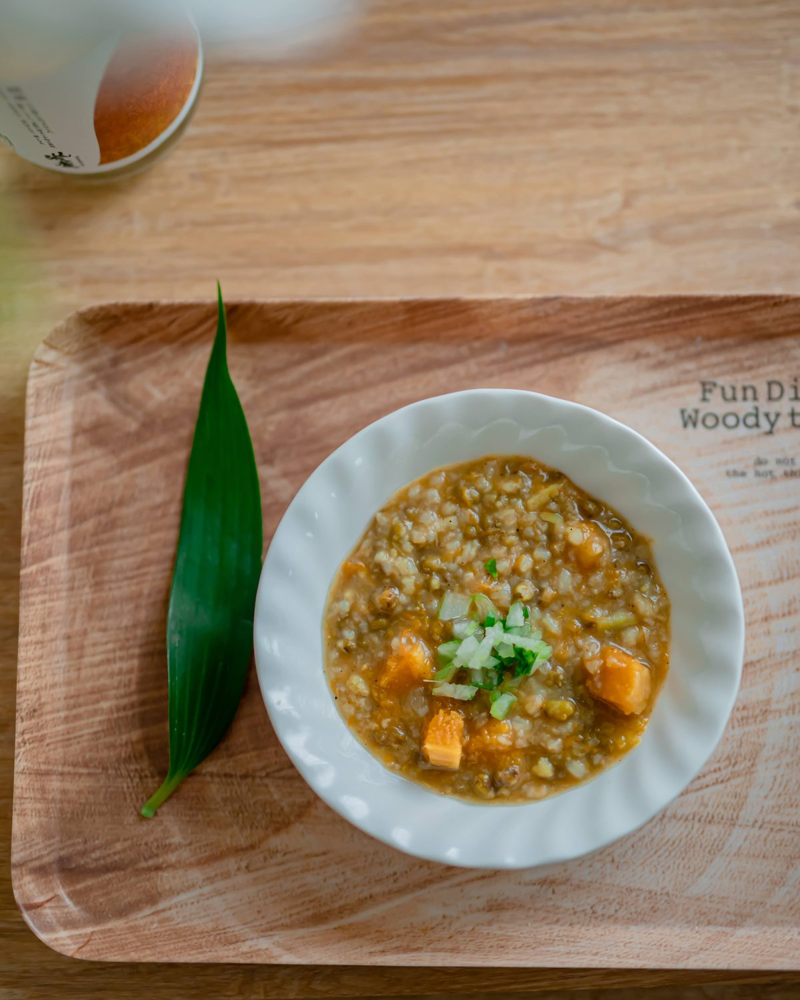

今年八月，我在甘乃夏空間上了一整天的阿育吠陀食養料理課，講師是 Gitanjali Sonia 老師。那天印象最深的，不是哪一種香料多神奇，而是老師一直在問的那個問題：
「妳吃進去的東西，妳的身體消化得了嗎？」
我們習慣問「這個健不健康」「熱量高不高」，阿育吠陀問的卻是另一件事。這篇想把那一天學到的，用台灣的日常講一遍。
阿育吠陀不問「健不健康」，問「消化得了嗎」
阿育吠陀把消化的力量叫做 Agni（阿格尼，消化之火）。火夠旺，吃進來的東西會被好好轉化成養分；火太弱，食物消化不完，就留下一種黏黏重重的殘留，叫 Āma（阿瑪，未消化的殘留）。
所以同一碗沙拉，對消化火旺的人是好東西，對一個整天待在冷氣房、手腳冰冷的人，可能就是負擔。吃什麼之外，怎麼吃、什麼時候吃、吃的時候是什麼狀態，在阿育吠陀裡一樣重要。
- 吃溫的、煮過的。生冷要消耗更多消化火。
- 中午吃最豐盛的一餐。阿育吠陀認為正午是消化火最強的時候。
- 坐下來、慢慢吃。邊滑手機邊吃、站著扒兩口，都會讓火變小。
為什麼台灣的身體特別容易「悶、濕、黏」
阿育吠陀用三種能量（Doṣa，督夏）來看身體：Vāta（瓦塔，風）、Pitta（皮塔，火）、Kapha（卡法，水與土）。其中 Kapha 的特質是重、濕、冷、黏。
台灣的氣候本來就濕熱；我們又很常從三十幾度的戶外走進冷氣房，手上拿著一杯冰飲，晚餐是外食。照阿育吠陀的說法，這些加在一起，會讓消化火變弱、濕氣排不掉——身體就像一塊吸飽水的木頭，點不太起來。
要先說清楚：這是阿育吠陀看身體的方式，不是現代醫學的診斷。但如果妳也常覺得「整個人濁濁的」，這個比喻或許能給妳一個新的角度。

先看症狀，再找食材
課後我把老師教的香料整理成一份食材對照表。下面這八種狀況，是台灣的身體最常遇到的，每一格都是「可以先試試看」的起點：
吃完就脹氣
飯後嚼一小撮茴香籽。麵食、糯米吃多了，可以用一小撮印度藏茴香配溫水。
冷氣房水腫、腿沉
早上空腹一杯乾薑粉溫水；煮菜用黑芥末籽爆香。台灣在地的薏仁也很好搭。
麻辣鍋、鹹酥雞的隔天
芫荽籽泡水過夜，隔天喝那杯水，加點茴香籽更好。這時先避開孜然，會更燥。
長痘、口乾、火氣大
芫荽籽＋茴香籽；煮菜的油換成苦茶油或椰子油。
睡不好、長期高壓
睡前一杯溫熱的 Golden Milk（黃金奶）：溫牛奶加一點薑黃和黑胡椒。
排便不順
早上空腹，一小匙 Ghee（印度酥油）配溫水。
整個人濁濁的、想重開機
連續幾天吃 Kitchari（綠豆仁燉飯），白天喝 CCF 茶。做法在下面。
產後、哺乳、備孕
溫熱、好消化、多一點好油。黑芝麻油可以入菜，也可以用來按摩。藥草類請看下面「產後的廚房」。
完整 49 種香料、藥草和台灣在地食材，包括每一種是溫是涼、適合誰、怎麼用，都在食材對照表裡，可以依症狀篩選，也可以直接搜尋。
最容易入門的三樣
如果妳只想先試一件事，我會建議從這三樣開始。材料在大型超市或印度雜貨店都買得到。
CCF 茶：三種種子煮成的日常茶
C、C、F 是孜然（Cumin）、芫荽（Coriander）、茴香（Fennel）三種種子的英文字首。三種都溫和，阿育吠陀認為三種體質都可以喝，是很適合當作第一步的茶。
常見做法三種種子各半小匙，加約 1 公升的水煮滾後，小火再煮 5–10 分鐘，濾掉種子，裝進保溫瓶，白天慢慢喝完。

Kitchari：一碗讓消化休息的燉飯
綠豆仁和白米一起，加一點薑、薑黃、孜然和酥油，燉到軟爛。這是阿育吠陀裡最經典的「淨化餐」：換季、病後、覺得身體需要重開機的時候，連續吃幾天，讓消化系統休息。
綠豆仁是阿育吠陀認為最好消化的豆類。我也很喜歡加南瓜或紅蘿蔔，顏色好看，也比較有飽足感。
飯後一小撮茴香籽
印度餐廳結帳時，櫃檯常放一小碟彩色的茴香籽，就是這個用途：幫助消化、清口氣。最簡單的一步，飯後直接放進嘴裡慢慢嚼就好。
產後的廚房
阿育吠陀很重視產後。生產時身體打開，流失了很多血與體力，照阿育吠陀的說法，這時候風（Vāta）最容易亂掉，消化火也很弱。所以產後的飲食原則很簡單：溫的、軟的、好消化的、有好油的。
這和台灣坐月子吃麻油雞、喝溫熱的湯，其實有很多相通的地方。差別是阿育吠陀會更在意「消化得了嗎」——如果吃了一大碗麻油雞反而脹氣、上火，那就是身體在說它還沒準備好。
老師在課堂上提醒的幾件事，我也一併寫在這裡：
- Shatavari（沙塔瓦里）、葫蘆巴籽在傳統裡用於產後與哺乳。
- 孕期、哺乳期，先避開 Ashwagandha（南非醉茄）和大量的薑黃。煮菜用的一點點薑黃沒有問題，指的是補充品或大量使用。
- 任何藥草補充品，懷孕、哺乳、正在吃藥的時候，先問過妳的醫師或助產師。
產後的身體照顧，除了吃，我也會用溫油按摩、藥草薰蒸、束腹和關骨來陪伴，寫在阿育吠陀產後調養的頁面。
阿育吠陀是有幾千年歷史的傳統醫學，這篇裡大部分的用法，來自經驗的傳承，不是大型臨床研究的結論。像「排毒」「淨血」這類說法，目前沒有科學證據可以證實。
也有一些地方，研究和傳統剛好對得上：生薑對孕吐的噁心感，有統合分析看到幫助；薑黃裡的薑黃素很難被人體吸收，加上黑胡椒後吸收率會大幅提高——這正是 Golden Milk 一定要加黑胡椒的原因。
另外要特別提醒：廚房裡的香料，和網路上買的濃縮藥草補充品，是兩回事。美國一項研究檢驗網購的阿育吠陀產品，大約每五件就有一件驗出鉛、汞或砷。如果要吃補充品，請選擇來源清楚的品牌，並先和醫師討論。
吃飯，也是照顧自己的一種方式
寫這篇的時候，我一直想到很多產後的媽媽：孩子終於睡了，自己站在廚房，把冷掉的飯匆匆吃完。我心疼那個畫面。
阿育吠陀教我的，不只是哪一種香料對應哪一種症狀，而是一個很簡單的態度：坐下來，吃一碗溫熱的東西，給身體一點時間消化。不用一次全部做到，先從一杯 CCF 茶開始就好。
如果妳想知道自己是哪一種體質，可以先做三督夏能量測驗（大約 3 分鐘），或看看五大元素的互動旅程。
常見問題
一定要買印度香料嗎？
不一定。台灣在地就有很多可以用的食材：薏仁除濕、白蘿蔔化痰、陳皮理氣、洛神花退火、苦茶油適合濕熱的夏天。食材對照表裡都有標出來。
需要先知道自己的體質嗎？
不需要。這篇裡的 CCF 茶、Kitchari、茴香籽，阿育吠陀認為三種體質都適用。想更細地調整，再做測驗或預約諮詢就好。
懷孕的時候可以用嗎？
煮菜用的少量香料，一般來說沒有問題。藥草補充品（例如 Ashwagandha、Triphala）和大量使用，請先避開，或先問過妳的醫師、助產師。
資料來源
- 課程：2026 年 8 月 16 日 阿育吠陀食養料理課，講師 Gitanjali Sonia，甘乃夏空間
- 阿育吠陀基本概念（Agni、Āma、Doṣa、六味）：Charaka Samhita 等古典文獻的整理（Wikipedia: Ayurveda｜Charaka Samhita）
- 生薑與孕吐：Viljoen E 等（2014）Nutrition Journal 統合分析（PMID 24642205）
- 黑胡椒與薑黃素吸收：Shoba G 等（1998）Planta Medica（PMID 9619120）
- 網購阿育吠陀產品的重金屬：Saper RB 等（2008）JAMA（PMID 18728265）；美國國家輔助與整合健康中心 NCCIH《Ayurvedic Medicine》（連結）
本文為資訊整理，不構成醫療建議，也不能取代妳與醫師、助產師的直接討論。